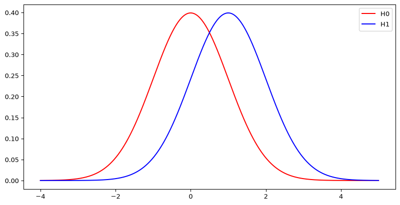
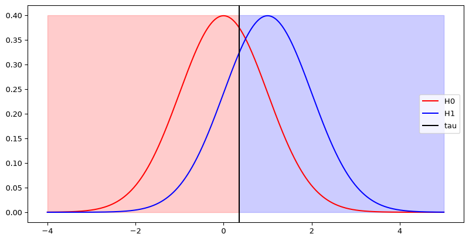
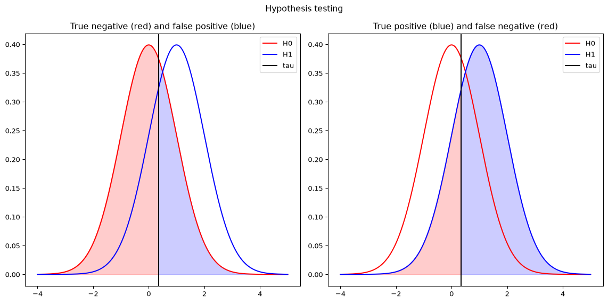
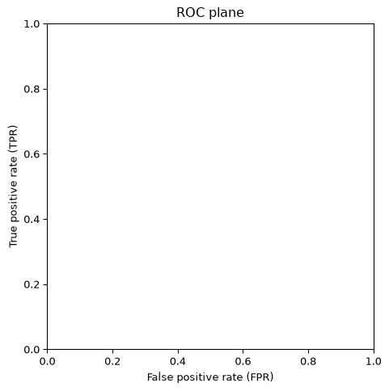
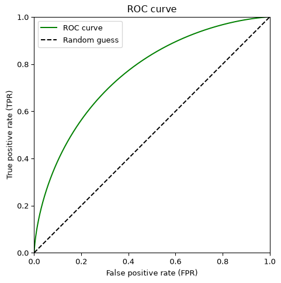
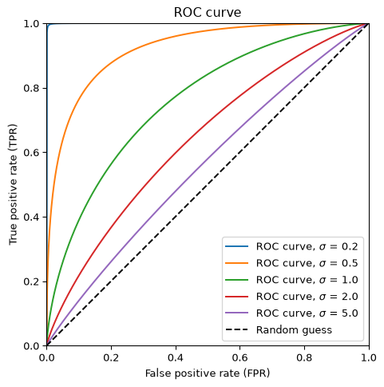
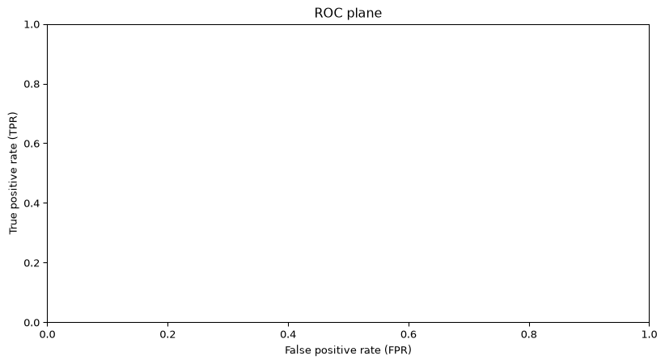

Applied Differential Privacy
Labels (H_0=) absent and (H_1=) present are conventions, not asymmetric privacy promises.
What statistical problem does that attacker face?
The strongest possible adversary knows the inner workings of the mechanism and considers only two possible datasets: one with the target user, and one without them.
How can we model the attacker’s task in this setting?
The strongest possible adversary knows the inner workings of the mechanism and considers only two possible datasets: one with the target user, and one without them.
How can we model the attacker’s task in this setting?
Distinguishing between two distributions based on a single draw from one of them.
In the statistical literature this is referred to as hypothesis testing, and in the CS community - binary classification.
Example: \(\mathbf{H_0}\): \(x \sim \mathcal{N}(\mu_0, \sigma^2)\) (negative) and \(\mathbf{H_1}\): \(x \sim \mathcal{N}(\mu_1, \sigma^2)\) (positive).
Where does one output favor (H_1), and where are the worlds hard to distinguish?

Columns correspond to the actual class; rows correspond to the rule’s guess.
A function from the domain to \(\{0, 1\}\), which given a sampled value guesses whether it was sampled from \(H_0\) or \(H_1\).
If the threshold moves left, which correct decisions and which errors both increase?

Columns correspond to the actual class; rows correspond to the rule’s guess.
Columns correspond to the actual class; rows correspond to the rule’s guess.
Locate the false-positive tail under (H_0) and the true-positive tail under (H_1).

For a threshold decision rule: \[FPR := \Pr_{X \sim H_0}(X > \tau), \qquad TPR := \Pr_{X \sim H_1}(X > \tau).\]
If participation is rare, “always guess absent” can have nearly 100% accuracy without reading the release. FPR and TPR condition on the actual world, so they expose distinguishing power without being distorted by the membership prior.
Privacy must control the whole tradeoff, not one deployment-specific operating point.
Naturally, there is a tradeoff between TPR and FPR. This tradeoff is represented by the ROC plane. Any decision rule is a point with coordinates \((FPR, TPR)\).
Where should a random guess lie? Where would a powerful attack lie?

For any FPR there is a maximal achievable TPR; the collection of these points is the ROC curve.
Should shifted Gaussians lie above or below random guessing?

Of course, this curve depends on \(\mu_1 - \mu_0\) and \(\sigma\).
Which shared noise scale makes the two worlds easiest to distinguish?

Consider two Binomial random variables: \(H_0 = \mathrm{Bin}(0.5, 5)\) and \(H_1 = \mathrm{Bin}(0.25, 5)\).
Consider two Binomial random variables: \(H_0 = \mathrm{Bin}(0.5, 5)\) and \(H_1 = \mathrm{Bin}(0.25, 5)\).

Sweeping the threshold traces a curve in the ROC plane.
Check the endpoints: always guess present versus never guess present.
What happens when an output lies in one support but not the other?
Every optimal decision rule is a threshold on the log probability ratio. If the log probability ratio is monotonic in \(x\), a threshold on the value itself is optimal.
Fix an FPR budget. Which outcomes should the attacker label positive first?
We model the privacy threat as the attacker trying to distinguish two hypotheses: \(H_0\) — the user was not in the dataset — and \(H_1\) — the user was in the dataset. The two distributions represent the mechanism’s output distribution given each dataset.
The closer the ROC curve is to the diagonal, the harder it is for the attacker to succeed — so a natural privacy definition upper-bounds this curve. One simple option is a linear bound: \(TPR \le m \cdot FPR + n\), where \(m\) is the slope and \(n\) the shift (plus its reflected part for the top half).
For every attack event (S), DP requires
\[Q(S)\le e^\varepsilon P(S)+\delta\]
and the reverse neighboring direction. Here (P(S)=FPR) and (Q(S)=TPR).
How should larger \(\varepsilon\) or \(\delta\) change the allowed attack region?
Did we just develop a new (and more natural) privacy definition than differential privacy?
Apparently not. The two-sided tradeoff bound has slope \(m=e^\varepsilon\) and shift \(n=\delta\). Thus \(\varepsilon=\ln m\) controls multiplicative distinguishability and \(\delta\) permits a small additive exception.
Let’s use this insight to reason about the privacy of several other noise-addition mechanisms:
Which mechanisms have bounded likelihood ratios, unbounded tails, or mismatched supports?
Bounded noise is not the same as bounded privacy loss.
Next: privacy auditing fixes an attack and estimates a statistically valid empirical lower bound.